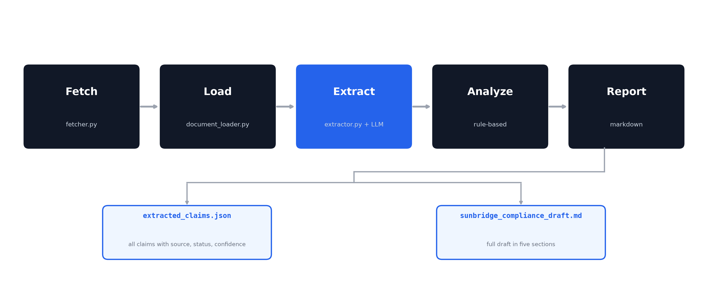
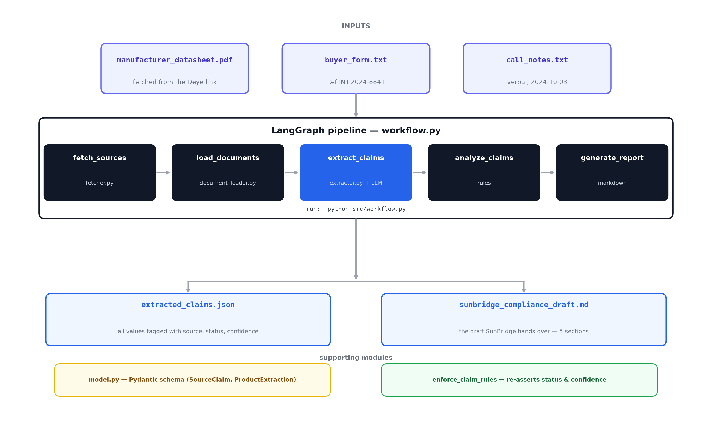

A small agent that reads the sources SunBridge actually has, keeps every fact tied to where it came from, and says plainly what is still missing.
China to Bangladesh | 5 kW grid-tied inverter | Trainee / Junior track
SunBridge imports a 5 kW grid-tied inverter from Deye in China into Bangladesh. The import agent needs a compliance bundle, but the factory has not supplied verified documents. What we have is thin and partly verbal.
The honest move is not to fill the gaps with guesses, but to say what is known, what is only spoken, and what is still missing.
Fetched from the public Deye link. A text-based PDF, so we read the text directly. This is the only documentary source.
Reference INT-2024-8841, item SUN-5K-G06P3-EU-AM2-P1. The purchasing side wrote the rating as "5000 W".
IP65, weight "maybe 18 kg?", SGS mentioned on the phone. Useful, but none of it is in writing.
Weight, model wording, and efficiency differ between sources. We never silently pick one. Every value is kept with the source it came from.
This disagreement is the whole reason the design focuses on source attribution and honesty.

Run it with python src/workflow.py. It fetches the datasheet, reads all three sources, extracts claims, compares them, and writes the draft.

A model extracts claims in JSON mode, Pydantic checks the shape, and deterministic rules re-assert status and confidence. Straight line in, two clean outputs out.
Three small documents, nothing to retrieve. RAG pays off when you search thousands of files. Here it would add moving parts for zero benefit.
The datasheet is text-based, not a scan. PyMuPDF reads it directly. If a future revision were scanned, that is the one spot we would swap out.
The job is a straight line: fetch, read, extract, compare, report. A graph of five nodes is enough. Chatting agents would be overkill.
The model proposes, rules dispose. After extraction, code re-asserts status and confidence so the output stays honest no matter how the model words it.
Simple is a feature. Complexity is something you defend, not something you show off.
Each claim carries value, source, status, confidence.
11 kg datasheet
18 kg call notes, guess
Shown side by side, not reconciled.
SGS verbal only
certificates pending from manufacturer
Missing is stated clearly, not invented.
The draft has five sections: what the datasheet establishes, verbal-only claims, disagreements, pending items, and the questions to send the factory.
The Deye site returned 403 Forbidden to a plain scripted download. Fix: send a browser User-Agent header, and keep an offline fallback copy so the run never dies on the network.
Mid-run the Groq free tier ran out. Fix: cache the extraction locally, so reruns work offline without calling the API again.
Real pipelines hit friction. The fix is a graceful fallback, never fake output.
The habit this task rewards: flag uncertainty instead of guessing.